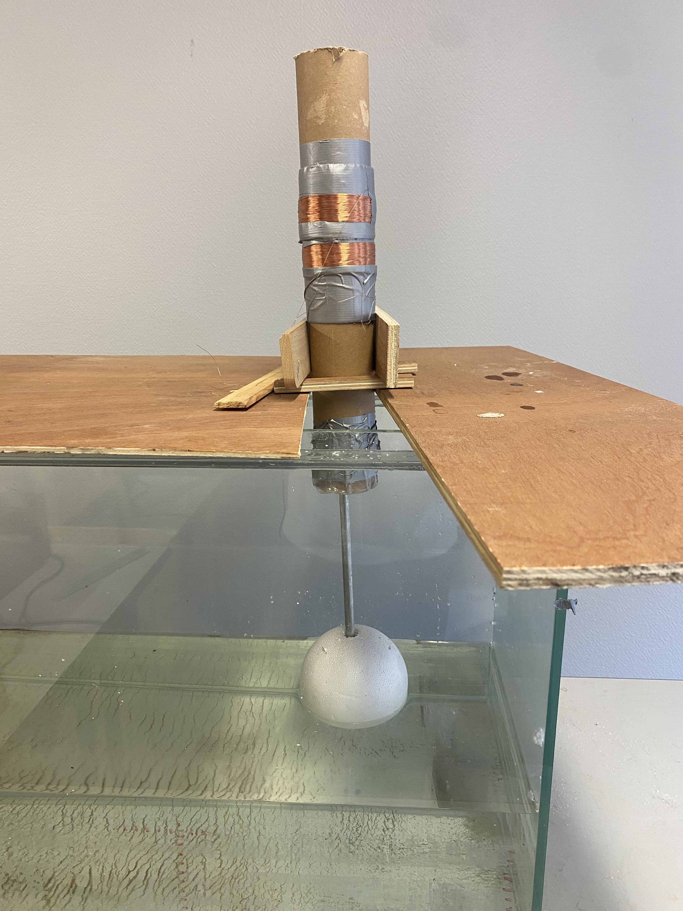
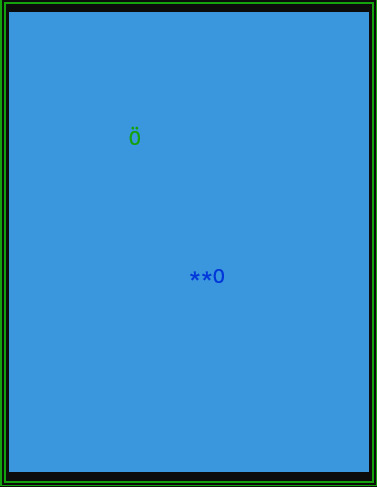
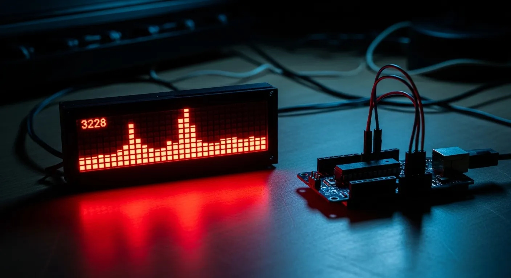

Mathis Vérité
ENSEEIHT Student
A professional portfolio exploring my skills, career direction and international opportunities.
Explore my portfolio ↓Learn about me in 3 minAbout me
A short introduction to the person behind this portfolio.
Hello, I'm [Your name].
I am a third-year student in [degree / programme] with an interest in marketing, brand communication and international business. I enjoy understanding what motivates audiences and turning insights into clear, creative messages.
My current goal is to develop practical experience in [your preferred marketing area] and work in a multicultural environment.
My extra activities
reading, sports (à developer : qu'est ce que ça apporte?).
Add a real example here: a class project, student association, part-time job, volunteering experience or personal project.
Audience-first
I aim to understand customer needs before proposing a message or campaign.
Creative & analytical
I want to pair engaging content with clear objectives and performance indicators.
International outlook
I am motivated by languages, cultural exchange and learning how markets differ.
CV · English & French
View or download my current CV. The file is managed by the portfolio owner.
My CV (PDF)
My 2–3 minute introduction
About me in 3min
Script (optional)
Present — who I am
Hello, my name is [Name], and I am currently studying [degree] at [university]. I am particularly interested in how brands build meaningful relationships with people across different channels and cultures. I would describe myself as curious, organised and open to feedback.
Very brief past — what shaped me
During [a course, job, volunteering activity or project], I had the opportunity to [specific task]. This experience helped me develop [two relevant skills] and taught me that successful communication starts with understanding the audience. One example was [brief example and outcome].
My professional value
I can bring a learner's mindset, clear communication and a structured approach to a team. I am interested in connecting creative ideas with evidence: defining a target audience, choosing the right channel and evaluating results with relevant indicators.
Future — where I want to go
My next step is to gain experience in [target role: digital marketing assistant / brand assistant / market research assistant] and strengthen my skills in [two skills]. I am also interested in an international experience in [country or region], where I could learn how marketing strategies adapt to different cultural contexts.
Ultimately, I want to help organisations communicate with the right people in a useful, responsible and memorable way. Thank you for listening. I would be happy to discuss how my interests and motivation could contribute to your team.
Recording checklist
- Speak in English and look at the camera.
- Keep the video between 2 and 3 minutes; practise with a timer.
- Use a quiet setting, good lighting and clear sound.
- Replace every bracket and include one genuine example.
- Do not read too quickly; add subtitles if possible.
My projects
Coursework, Personal projects

PROJECT 01Wave Buoy
Objective: Create a wave buoy with a permanent magnert linear generator.
My contribution: I designed the complete system and coordinate the different manipulations
You can see more of the project here:
https://docs.google.com/presentation/d/1cd9ETONaDkIy5UMC5o7Yba5gDSYiyLnhdnGDn7vqG7Y/edit?usp=sharing

PROJECT 02Snake Game
Objective: Make a snake game in C language
Outcome: Learn to comply with the specifications and to teamwork on a coding project.

PROJECT 03[Project title]
Objective: [What did you want to achieve?]
My contribution: [Your role, tools and actions.]
Outcome: [Results, learnings or measurable impact.]
Three marketing career profiles
These are role profiles to investigate, not claims that interviews have already taken place. Add evidence from My Job Glasses, alumni interviews or reliable professional sources.
Digital Marketing Manager
Focus: digital strategy, channel planning, campaign performance and coordination.
Useful strengths: analytical thinking, project management, communication and adaptability.
Questions to investigate: Which KPIs matter most? How does the role balance creativity and data? What is the usual first job on this path?
My takeaway: [Add one insight from a real interview or source.]
Evidence: [Name, role, source/link, date accessed]
Brand / Product Marketing Manager
Focus: positioning, customer insight, value proposition, product launches and cross-team alignment.
Useful strengths: storytelling, research, strategic thinking and collaboration.
Questions to investigate: How is positioning developed? How are customer insights used? Which teams collaborate on a launch?
My takeaway: [Add one insight from a real interview or source.]
Evidence: [Name, role, source/link, date accessed]
Market Research / Consumer Insights Analyst
Focus: understanding consumers, designing research, interpreting data and presenting recommendations.
Useful strengths: curiosity, quantitative and qualitative reasoning, accuracy and presentation.
Questions to investigate: Which research methods are used? How are findings turned into decisions? Which tools are expected?
My takeaway: [Add one insight from a real interview or source.]
Evidence: [Name, role, source/link, date accessed]
Three possible international projects
Each project is linked to one of the three role models. Treat these as proposals to research and validate for your own eligibility, timing and budget.
Digital campaign internship — Ireland
Goal: support a digital team with content calendars, campaign coordination and performance reporting.
Why it fits: develops practical digital marketing skills in an English-speaking environment.
Plan: identify agencies and international companies, tailor an English CV, and check university placement and work eligibility requirements.
Success measures: campaign report produced, professional vocabulary improved, supervisor feedback collected.
Research: [Add a real employer/programme, application dates and source link.]
Brand marketing project — Netherlands
Goal: assist with competitor research, product messaging or a launch campaign for an international brand.
Why it fits: offers exposure to multicultural teams and international brand positioning.
Plan: shortlist companies, identify roles open to students, and prepare a mini portfolio case study.
Success measures: competitor map, audience profile and a campaign proposal reviewed by a mentor.
Research: [Add a real employer/programme, application dates and source link.]
Consumer insights placement — Belgium
Goal: contribute to survey design, desk research, interview summaries or market analysis.
Why it fits: builds research skills and experience comparing consumer behaviour across markets.
Plan: investigate research agencies, university partnerships and internship eligibility; prepare a short sample analysis.
Success measures: one research brief, a clear data visualisation and a presentation of recommendations.
Research: [Add a real employer/programme, application dates and source link.]
Before submission, replace general ideas with specific, verifiable opportunities and explain how each matches your skills, interests and career objectives.
Let's connect.
I am open to learning opportunities, professional conversations and international experiences in marketing.
Mathis Vérité
mathis.verite@etu.inp-n7.fr · linkedin.com/in/mathis-vérité-0013813b6 · France / Toulouse
GitHub portfolio project